어릴 적부터 항상 미술을 진로로 꿈꿔왔습니다. 그림 그리는 것이 좋아서 초등학생 때부터 미술학원을 다녔고 자연스럽게 중학교 3년 내내 예고입시를 했는데, 재미있었지만 성격이 워낙 꼼꼼해서 순수회화보다는 디자인이 더 적성에 맞을 것 같다고 생각했습니다. 그 후 미대입시, 대학생활을 거치며 드로잉부터 디자인까지
전반적인 기본기들을 탄탄히 다졌습니다.
VOLUNTEER ACTIVITY
배려와 긍정적인 에너지를 주고받는 법을 배우다
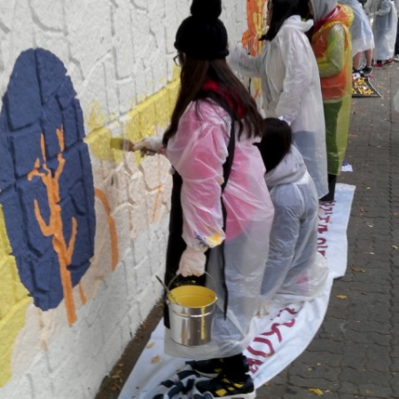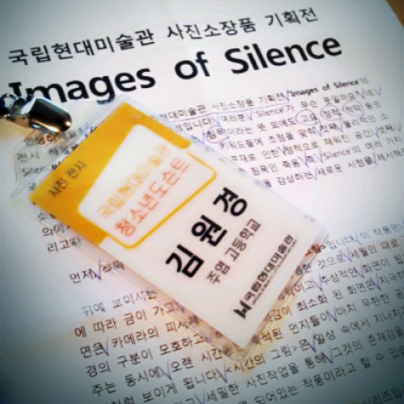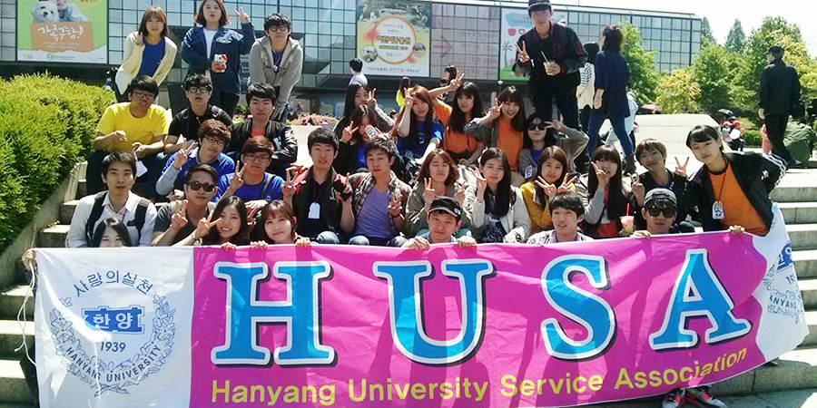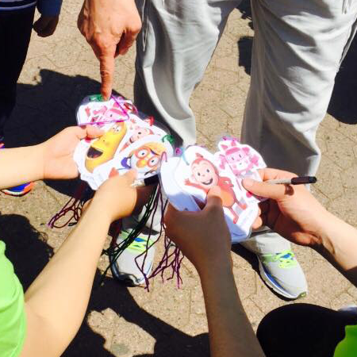
고등학생 때부터 벽화, 행사 보조, 노인 보조, 미아 방지, 아름다운 가게 등 다양한 봉사활동을 많이 해왔습니다. 처음에는 봉사시간을 채우기 위해서 시작했으나 점차 봉사 자체에 보람을 느꼈고, 필요한 시간을 훌쩍 넘길 만큼 다양한 봉사를 했습니다. 특히나 고등학생
때 <국립현대미술관 청소년 도슨트 1기>를 수료하며 단순한 서비스가 아닌 상호 커뮤니케이션의 즐거움을 배웠습니다. 미술관 봉사를 계기로 전공을 살리면서도 다른 사람들과 긍정적인 에너지를 주고 받을 수 있는 일을 하고 싶다고 막연히 생각하게 되었습니다. 대학 시절에도 2년간 봉사 동아리(Hanyang University Service Assosiation) 활동을 하며 부회장을 맡았었습니다.
entertainment design
살아 움직이는 커뮤니케이션의 즐거움을 배우다
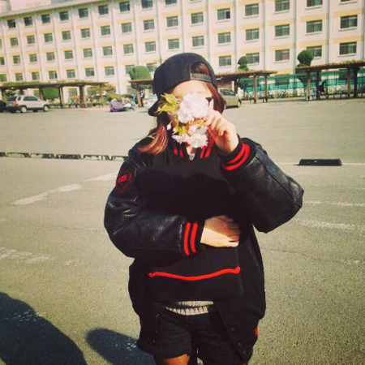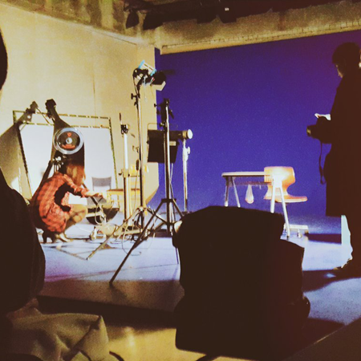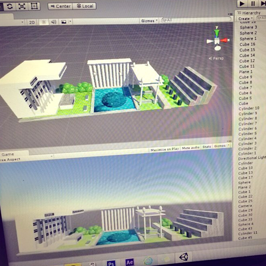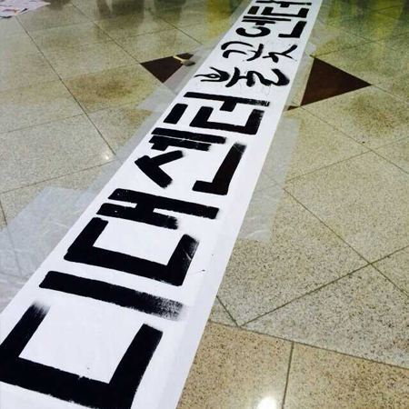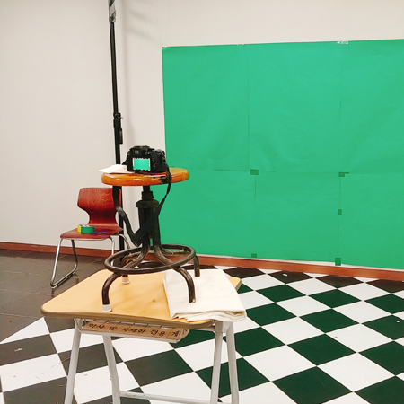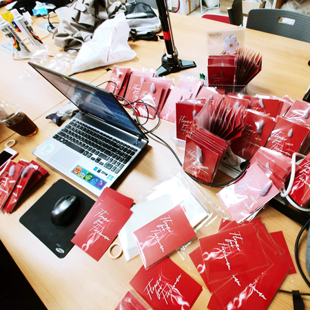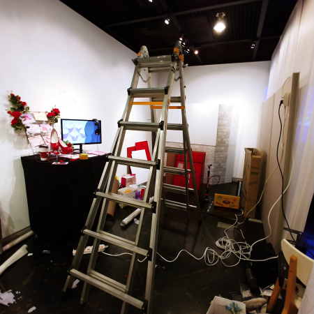
한양대학교 엔터테인먼트 디자인학과(현 영상디자인)를 졸업했습니다.
다소 생소한 이름 탓에 전공의 정체성에 대해 많은 질문을 받았고, 많은 고민을 한 적이 있습니다. 결론적으로 저는 엔터테인먼트가 일종의 '틀'이라고 생각합니다.
주로 일컬어지는 디지털 영상 매체뿐만 아니라 게임과 어플리케이션, 웹 등 우리의 즐거운 경험을 위해 움직이는 모든 것들이 엔터테인먼트인 셈입니다.
학교를 다니며 4년간 사람들의 참여를 유도하는 인터랙티브 프로젝트들을 많이 진행했고, 그 과정들을 통해 UX/UI라는 분야에 처음 흥미를 가지게 되었습니다.
감상만으로 끝나는 것이 아니라 유저에게 새로운 경험을 선사하며 상호 커뮤니케이션을 해나간다는 점에서 그야말로 살아 숨쉬는 디자인이라고 생각했습니다.
2D motion graphic Music video 'STARS'
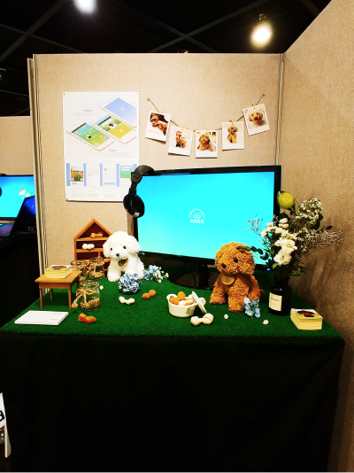
Mobile UX/UI 반려동물 스마트 케어 어플리케이션 '똑똑하개'
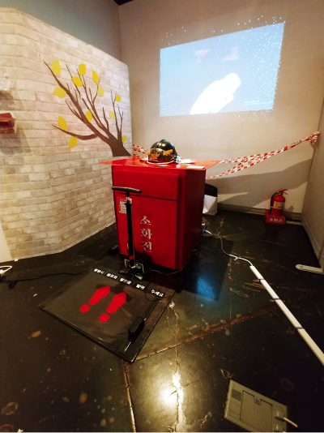
Interactive and narrative 소방관 인식 개선 캠페인 'Flower for Fireman'
그러다보니 자연히 공공 캠페인에도 관심이 늘어 졸업작품 중 내러티브와 인터랙티브 작품으로 소방관 인식 개선 캠페인(Flower for Fireman)을 진행했습니다.
처음 시도해보는 인터랙션 방식에 힘든 점도 많았지만 진행 과정에서 가치관이 더욱 견고해졌기 때문에 제게는 애정은 물론 의미가 깊은 작품입니다.
uxui
좋은 인터페이스는 사용자에게 좋은 경험을 선사하고, 나아가 사용자의 인식을 개선할 수 있습니다. 그리고 디자이너에게도 좋은 경험으로 되돌아옵니다.
디자인이 좋고, 코딩이 재미있습니다. 스마트기기를 통한 다양한 인터랙션에도 관심이 많습니다.
늘 새롭고, 재미있고, 살아 숨쉬는 디자인을 하며 다양한 사람들과 끊임없이 좋은 에너지, 그리고 경험을 주고받는 소통을 해나가고 싶습니다.